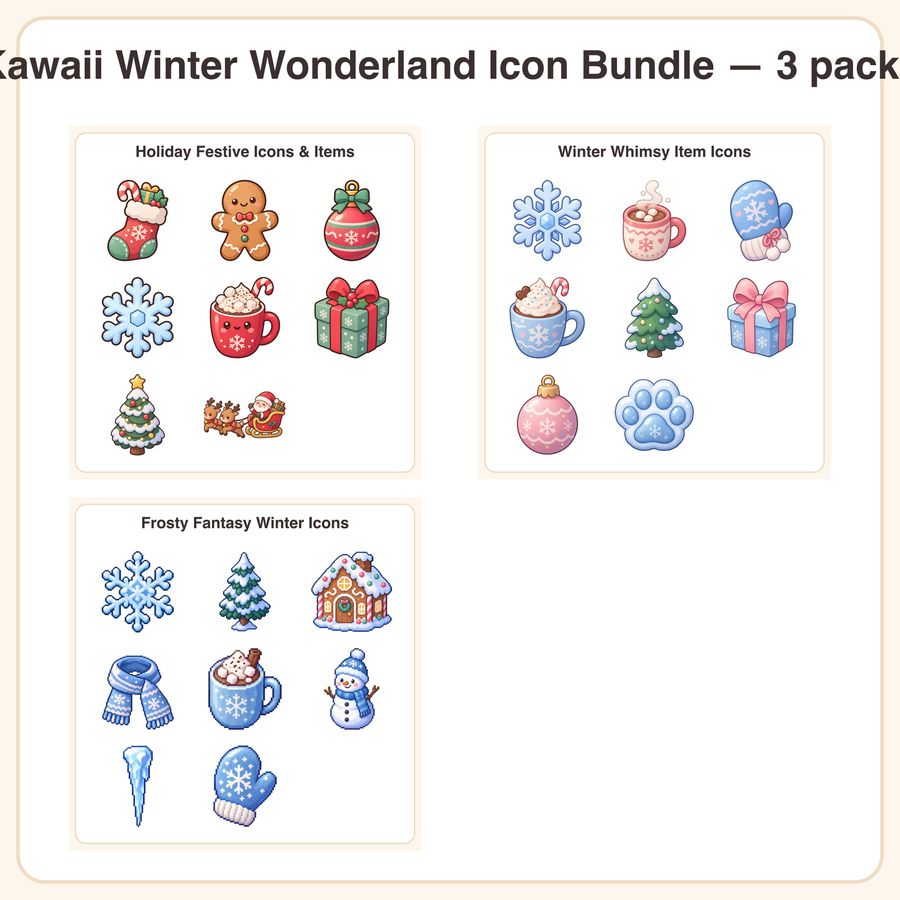

$8.49
View on EtsyDeck out your cozy winter game in one cohesive style — no mixing and matching art styles required! This bundle combines three matching kawaii pastel icon packs into a single easy download. What's included: • Holiday Festive Icons & Items pack • Winter Whimsy Item Icons pack • Frosty Fantasy Winter Icons pack (See each pack's individual listing for exact icon counts) All three packs share the same soft pastel palette and chunky, clean outlines, so every icon drops seamlessly into the same UI without a style clash. File formats & sizes: • High-resolution PNG files with transparent backgrounds • Sized for easy scaling in-engine (Unity, Godot, GameMaker, etc.) • Delivered as a zipped folder for instant download How to use: Drag and drop straight into your game project as UI icons, inventory items, achievement badges, or seasonal event assets. Great for cozy sims, farming games, hidden object titles, or any winter/holiday-themed release. License: Personal and small business commercial use included — use these icons in up to 500 units/copies of your finished game or product. Please don't resell, redistribute, or share the raw files themselves as a stock asset. A quick honest note: these designs were created by our shop with the help of AI image tools, then curated and organized into packs for game-ready use. Bundle savings: get all three packs together for less than buying them separately!